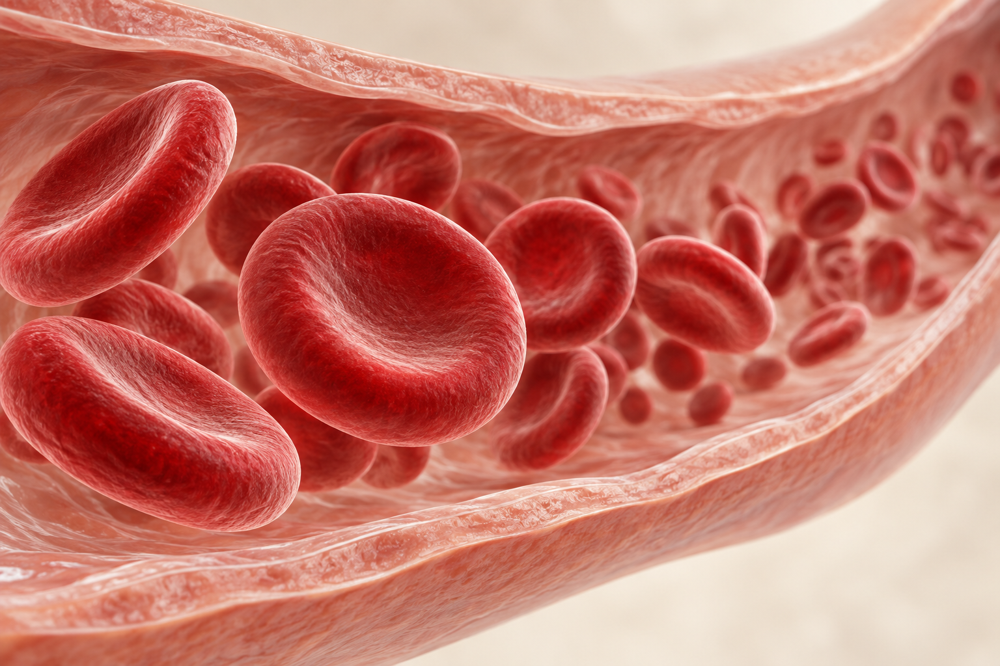

Every puff
goes deeper.
The smoke disappears.
The consequences can stay.
Go beneath the surface. Follow one breath from the cigarette to the lungs.
Explore the body ↓Your lungs are built for air.
Keep smoke out.
One cigarette.
Take it apart.
Peel back the wrapper. Follow the tobacco.
See the fibres inside the filter.
01 / PaperA thin wrapper surrounds the tobacco.
02 / TobaccoBurning it produces smoke containing harmful chemicals.
03 / FilterA filter does not make a cigarette safe.
What changes
beneath the surface.
Three magnified comparisons show how smoking-related lung disease can change the structures behind every breath.
A narrower path for every breath.
Repeated irritation can inflame the airway lining. With chronic bronchitis, thick mucus adds another barrier to airflow.
Open lumen
The central opening leaves space for air to pass.
Swollen lining
A thicker, inflamed wall takes up space inside the airway.
Excess mucus
The yellow material illustrates mucus that can obstruct the remaining opening.
Less space for airflow can contribute to coughing, wheezing and breathlessness.
When the walls between air sacs break down.
In emphysema, damage destroys the walls between many alveoli. Separate small spaces merge into larger, less efficient air spaces.
Intact partitions
Thin walls divide healthy tissue into many small air sacs.
Lost walls
Broken or missing partitions connect air spaces that were once separate.
Enlarged spaces
Larger spaces do not mean better breathing. The lungs also lose elastic recoil.
Less elastic recoil makes it harder to push air out. Air can become trapped in the lungs.
Less surface for oxygen to reach the blood.
Oxygen moves from air in the lungs into the blood, while carbon dioxide moves the other way. This exchange depends on the air sacs and their nearby blood vessels.
Capillary network
Tiny blood vessels run beside the thin alveolar walls.
Red blood cells
These cells carry oxygen from the lungs to the rest of the body.
Reduced contact area
Losing alveolar walls also removes surface available for gas exchange.
With damaged lung tissue, getting enough oxygen can become more difficult, especially during activity.
AI-generated educational illustrations, not clinical scans. Structures and textures are simplified and enlarged for explanation. These are examples of chronic disease, not changes caused by four puffs.

BEYOND THE LUNGS / INTO THE BLOODSmoke doesn’t stop
at your lungs.
Carbon monoxide in cigarette smoke can enter the bloodstream and bind to haemoglobin — the oxygen-carrying protein inside red blood cells.
This reduces the blood’s capacity to carry oxygen. The harm is not always something you can see.
Smoking & oxygen supply — CDC ↗AI-generated illustration of red blood cells. Molecules, effects and timing are not shown to scale.Don’t start.
Or start stopping.
Quitting helps at any age.
You don’t have to do it alone.